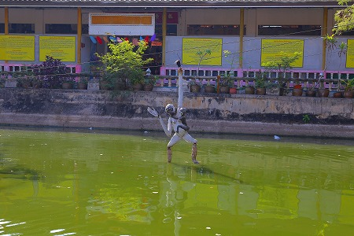
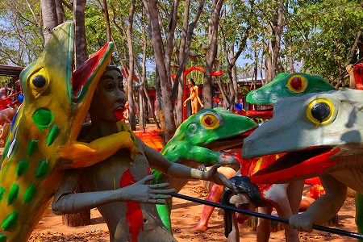

当サイトを古くからご愛顧いただいている皆様（本当にいつもありがとうございます！）におかれましては今更言うまでもないが、「先週このサイトの事知ったわー、結構頑張ってるねー」的な方もご高覧いただいているかも知れないので、一応説明しておく。
タイには
地獄の様子を等身大のコンクリ像で表現した立体地獄が多数ありまして、そのどれもがキテレツで我々の想像力の遥か斜め上を行っているわけだが、そんな
タイの立体地獄界でトップクラスのクオリティを誇るのが、ここワットパーラックローイなのだ。
場所はタイ東北部の都市、ナコーンラチャシーマの郊外。
前回訪問したのは2004年、あれから10年以上経過しているわけだ。
（前回訪問時のレポートは
こちら）
相変わらずタイ国内では地元の幼稚園児の遠足スポット的な場所でしかないが、何故か日本国内ではその人気はうなぎ登り。
今では多くのもの好きな日本人が数多く訪れているという。
この寺を珍寺として最初に紹介した私としても誠に嬉しい限りである。

前回はバンコクからタクシーを飛ばして（
東京〜福島と同距離！）日帰り弾丸ツアーを決行したが、チョット無理があったので今回はナコーンラチャシーマに前泊し、早い時間に現場入りを果たした。
おかげで前回は急ぎ足での見学だったが、今回はじっくりと観ることが出来た。
最早この寺がどんな寺かは充分すぎるほど判っているので前回のような超興奮状態には陥ることはなかったが、それでもテンションが上がらざるを得ない光景が延々と続く。
門を潜ると出迎えてくれる猿のモニュメント。
その先にはタイの農村風景や現代社会を風刺したコンクリ像が並んでいる。
普通であればこのエリアだけで充分珍寺なのだが、この壮大なる規模の
ワットパーラックローイ曼荼羅世界においてはほんの序章にしか過ぎないのだ。
犬のおっぱいを人間の子供がチューチューしている。
タイの農村ではリアルな風景なのだろうか？違うのか？
一方都会ではもの凄く判りやすすぎる資本主義社会が絶賛進行中。
金持ちは神輿に担がれ、庶民はその神輿を担ぐ役。
…こんなものまでコンクリ像で造らなくても…
…と思うが、この寺のコンクリ像の大半が同じようなレベルなので、敢えて詳しく言及することは控えさせていただきます。

…こちらは軍人や警察官の苦悩。
資本家にヨイショしないで済む公務員なはずだが、結局車や家のローンに追われる姿は金持ちの神輿を担ぐ連中と何ら変わりはない。
つまりどう転んでも金の奴隷に過ぎない、という現代のタイ社会を現しているわけです…か。
この寺の最大の特徴は
小銭を投入すると動きだすギミックが大量にあるという点。
こちらは小銭を手前の黄色いボックスに投入するとステージ上の擬人化された猿と犬が安いタイのポップミュージックに合わせて踊り出す。
…だから何なんだ！とか言わないで欲しい。とにかくそういうものなのだ。
賽銭の方法もイカしてる。
托鉢僧の蜂の中にコインを投げ入れるのだ。
勿論中に入れば願い事が叶う、的な意味合いがあるのだろう。
一生懸命コインを投入するオヤジ。
仏のご加護があることを祈るばかりである。
足元にいる方々にも油断できない。
こちらは
マッカリーポーンの木。いわゆる美女の生る木である。
勿論女性も木もぜーんぶコンクリ製。妙にエロい。
園内、もとい境内にはコンクリの動物も数多く存在している。
こちらはトッケイの遊具。要は30センチくらいのヤモリの親分みたいな生き物。
何でこんなイボイボの気持ち悪い生き物が遊具になっているかと訝しむ向きもあろうが、トッケイはタイでは結構ポピュラーな生き物なのだ。
以前某イベントで焼いたトッケイを食べさせられたが（ついでにカメムシ酒も飲まされましたよ）、案外美味だった。
ただし、オレンジ色のイボイボの皮は食べるのにやや躊躇しました…。
前回訪問時に最もコインを投入した
水上自転車を漕ぐガイコツ。
ガイコツはツータイプあり、どちらもコインを投入すると絶叫しながらこちらにやって来る。

こちらは絶叫しながら綱渡りをする猿。
灼熱の太陽が照り付ける中、バケモノや動物があちこちで、しかもフルボリュームで絶叫しながら動いている。
ハッキリ言って正気を保つのがかなり困難な場所だ。
そしてその狂気は地獄コーナーでマックスの盛り上がりを見せるのであった。
数多くの等身大（あるいはそれ以上）のコンクリ像によって地獄世界を表現している。
その規模、数、緻密さ、残酷さ、ギミックの多さ、そして造形の奇抜さは
タイの立体地獄の中でもぶっちぎりでナンバーワンと言って間違いなかろう。
凄惨なシーンが目白押しだが、派手な色彩とユニークな造形によってポップな印象に仕上がっているところが素晴らしい。
↑コレとかこの寺の中でも
最高傑作のひとつだと思う。
制服を着た小学生が首を吊られちゃっている。意味は分からないが造形物として滅茶カッコイイ。
何ならコレのフィギアとかお土産で販売してもらいたいものだ。
頭の生えた樹。
他の地獄の寺でも見たことがあるのでここのオリジナルではないのだろうが、造形的にグッとくるねえ。
バイクで事故った地獄。
最早ポップなんだかキ〇ガイなんだか判らない色使い。痺れるぜ。
地獄の傍らにはステージがあり、人形が並んでいる。
ステージの手前には4体の人形が座っており、自分の胸元を指さしている。
もちろん指先にはコインの投入口。
地元のチビッ子がコインを投入したら、
ステージ上の人形たちが一斉に躍り出した。
勿論激ヌルのタイ音楽が爆音で響き渡る。音量何とかならないのか…。
その近くにはガイコツのステージも。
勿論こちらもコインを投入するとカクカクとガイコツダンスを披露してくれる。
ただし、半分近くが死んでいたが、
まあ、そこは地獄なんで勘弁してあげましょう。
樹の妖精みたいなヤツ。こんな奴に責め苦を受けるのは絶対嫌だ。
犬のおまわりさんもＭ16で武装してるのか。

カエルの目が怖い…。
そうこうしているうちにカラフルなキノコ（のオブジェ）がずらりと並ぶエリアが。
確か前回訪問した際には、この先にカメのカタチをした本堂があったのだが、どういう訳かその周辺のエリア含めて行けなくなっていた。
良い方に考えれば改修あるいは増設中、ということになろうが、この手の珍寺を数多く見てきた私の感触としては閉鎖してしまったように思えてならない。
もし最近この寺に行かれた方がいらっしゃったら、現状がどうなっているか是非教えてください。
というわけで、作りかけのお堂にお参りしつつ…
冗談のような巨大な頭に腰を抜かす。
目からレールが飛び出しており、それぞれのレールにお盆を持った女性の像が座っている。
これは瓦を寄付するための装置で、女性の持ってるお盆の上に奉納する瓦を乗せると自動的に女性がレールを登って行き、目の中に入っていくというシステム。
何故瓦一枚にこれほど大掛かりな仕掛けを…と思う方もいらっしゃるかもしれないが、その意味は問わないで欲しい。
問うたら終わりなんだよ！こういうのは。
広大な園内をぐるりと回って入り口付近に戻ってきた。

この寺のシンボルとでもいうべき巨大な精霊。
男女対になっており、以前は巨大な手を上下させていたが、今回はお休み中だった。
巨大なトゲトゲの樹。
浮気をした男女が獄卒に脅されてトゲトゲの樹を登る。
一番上まで登りきると鳥につつかれ下に落ちる、するとまた獄卒に槍でつつかれ木に登る、という無限ルーティーンの地獄だそうで。
手前には串刺しにした生首がズラリ。全員目血が出ちゃってます。
やっと入口付近に戻ってきた。
最初に出てきた象の門を潜って猿のオブジェを通り抜けた辺り。
境内には食堂や売店もあるのでゆっくりと半日ほど滞在することをお勧めする。
トイレの前ではハードな夫婦喧嘩が繰り広げられていた。
何故かお尻がくっ付いた犬のミイラが…。
規模の縮小はあったが、
エンターテインメントとして非常によく出来た最高にマッドでポップな寺だった。
もし「タイでお薦めの観光地とかってありますか？」という質問をされたら私は躊躇することなくこの寺を進める。観光地じゃないけどな。
ただ、質問した人がワットプラケオやワットアルンのような寺を所望していたのだとしたら、私が言えるのは一言だけだ。
「俺に聞いたお前が悪い」
次のパトロールへGO！